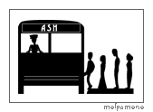

|
|
||
|
|
|
|
|
||
|
|
|
Traditional a.s.h Methods File
The famous (infamous?) "Internet suicide file", containing a list of methods
with procedures and likelihood of success. Note that some of the later entries
in the file are more tongue-in-cheek than serious. (Note: This is a
fairly long file and may take 1 - 2 minutes to load at 28.8 kbps.)
euclid's unusual methods
In the spirit of the early days of the traditional methods file, euclid has
written some methods that could work, if not necessarily the most
practical.
Better Dying Through Technology
Tech tips serving as an adjunct to various methods
LD-50 information
An explanation of the term "LD-50", and a table of LD-50's compiled from ash
posts

Suspension Hanging Reference /
Suicide Note
Submitted by "Steven", this comprised both a suicide note and a detailed
explanation of his planned method, suspension hanging.
Carbon Monoxide (CO) Poisoning As a Method
Doug's post about his research, as amended by him based on comments made
German translation here
Also.. an American composer named Jerry Hunt committed suicide in 1993 using
industrial carbon monoxide.
Click here for
a transcript of the instructional videotape he made.
Helium As a
Method
This links off-site to Final Exit's method for using helium.
Gateway Methods Discussion
The Gateway mailing list, part of the Freitod
archive, has an extensive methods discussion. This is an ongoing
translation of some of the archived methods. (Untranslated portions are
still in the original German.)
Last update: Thursday, April 11, 2002 21:38
|
"The thought of suicide is a
great consolation: by means of it one gets successfully through many a
bad night." |
|
|
|